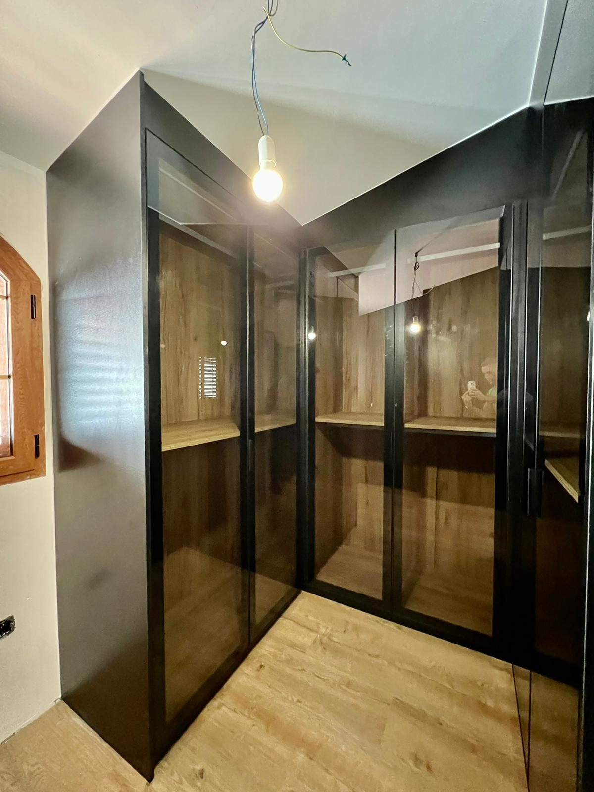

01 · Almacenaje
Armarios y vestidores
Los armarios son el corazón de una casa ordenada. Diseñamos el interior según lo que guardas —y cómo lo guardas— para que cada balda, cajón y altura tenga sentido.
- Interiores en melamina, roble o chapa natural
- Puertas correderas, abatibles o con espejo
- Iluminación LED integrada
- Aprovechamiento de huecos, altillos y bajo escalera